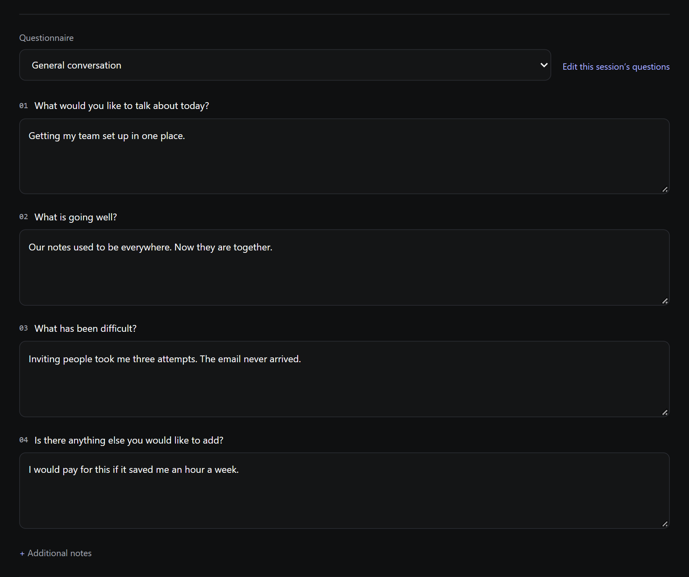
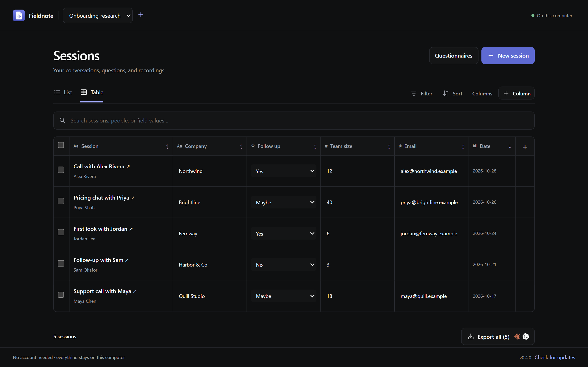
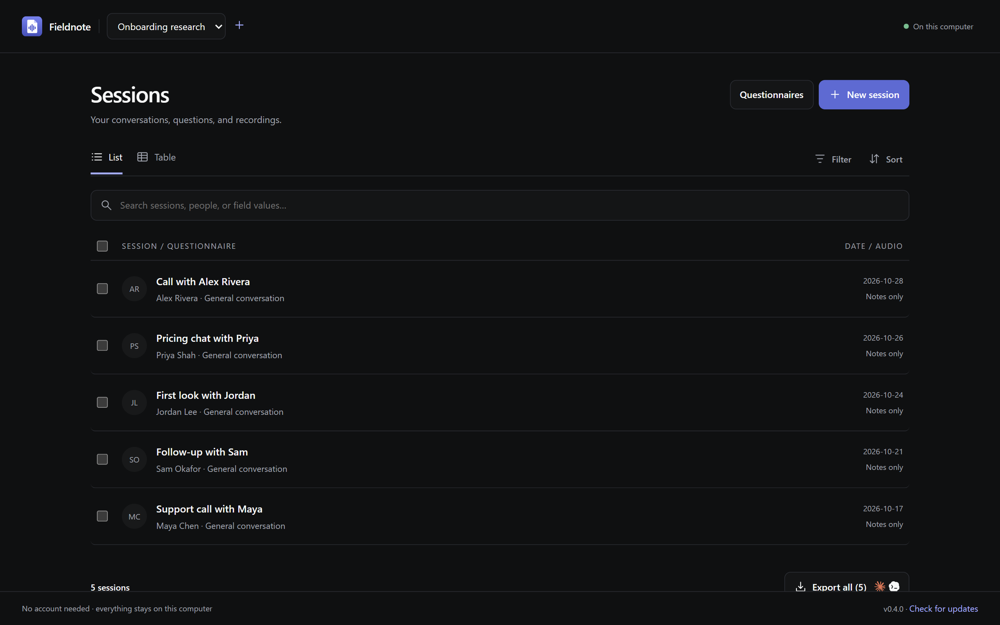

Made for handing off to Claude Code Codex
Talk to people.Build what they need.
Fieldnote is a free desktop notebook for interviews and conversations. Write down answers, record the audio, and hand it all to your coding agent with one message.
- Free and open sourceMIT licensed, nothing to pay for
- No accountOpen it and start
- On your computerYour notes, your files
- No AI insideUse the agent you already have
Record
You’ll know it’s really listening.
Nothing is worse than finishing a great conversation and finding an empty recording. Fieldnote shows you what the microphone hears, while it hears it.
- See when someone is speaking, and get told if no sound is coming through
- Pause and resume, and pick the microphone you want
- Saved as you go, and recovered if the app closes unexpectedly
- Already have a call recording? Import WAV, MP3, M4A, and more
Your voice is being recorded.
Ask
Bring your questions to every call.
Start from a template or write your own, then fill in the answers as you talk. Everything saves on its own.
- Edit a template for future sessions, or just one session
- Changing a template never touches answers you already have
- Keep each project’s sessions and questions separate

Compare
Every conversation, side by side.
Add the columns you care about, then search, filter, and sort across the whole project.


Hand it off
One message. Your agent takes it from there.
Fieldnote puts everything in a folder and writes the message for you. Paste it into Claude Code or Codex, and it can read your notes, transcribe your recordings, and tell you what people said.
- 1
Click Export
Every session goes by default. Tick a few if you only want some.
- 2
Pick a folder once
Fieldnote keeps it up to date, and keeps it out of git so private recordings stay private.
- 3
Paste the message
Your agent transcribes, sums up what people said, and waits for you before touching any code.
It knows what changed
Each time you export, Fieldnote compares your sessions with the folder. The message only asks your agent to read what’s new or edited.
fieldnote/ ├─ START-HERE.md ├─ sessions/ ├─ audio/ └─ sessions.json
Plain files you can read
Markdown, JSON, and your original audio. Nothing is locked in, and you can open all of it yourself.
Transcripts stay with the audio
Your agent saves each transcript next to its recording. Export again and they’re still there, so nothing gets transcribed twice.
Features
Everything for the conversation. Nothing you’ll have to manage.
Stays on your computer
Your notes and recordings stay on your machine until you choose to hand them off. No cloud to sign in to.
No account
No sign-up and no subscription. Name your project and start your first session.
Recordings you can trust
Audio is saved as it comes in, so an unexpected close doesn’t cost you the conversation.
Bring your own audio
Import WAV, MP3, M4A, AAC, OGG, FLAC, WebM, or MP4. Your originals are copied unchanged.
Save it your way
Prefer one file? Export Markdown, JSON, or a ZIP that includes every recording.
Updates in the app
New versions install from inside Fieldnote, and your work stays exactly where it is.
Small on purpose
What Fieldnote doesn’t do.
No built-in AI
Fieldnote doesn’t transcribe or summarize anything itself. That’s the job of the agent you already use.
No both-sides call capture
It records your microphone. For an online call, import the call’s recording to keep both sides.
No sync or teams
One computer, one person. Export a ZIP whenever you want a copy somewhere else.
Open source
Don’t like something? Change it.
Fieldnote is MIT licensed and built with Tauri, Rust, SQLite, and plain TypeScript. Fork it and make it yours.
$ git clone https://github.com/indkhan/Fieldnote $ cd Fieldnote $ npm ci $ npm run desktop
Download
Get Fieldnote
Windows Your system
Windows 10 or 11. Installs for your account, no admin needed.
macOS Your system
Not notarized yet. If macOS blocks it, choose Open Anyway in Privacy & Security.
Linux Your system
Needs WebKitGTK 4.1. For AppImage, run chmod +x first.
Your next conversation is worth keeping.
Free, open source, and yours.